전자기사 (2018-09-15 기출문제)
1과목: 전기자기학
1. 자계의 세기를 표시하는 단위와 관계 없는 것은?
- A/m
- N/Wb
- Wb/h
- Wb/H·m
(정답률: 51%)

2. 질량 m=5×10-10[kg]이고, 전하량 q=2.5×10-8[C]인 전하가 전기장에 의해 가속되어 운동하고 있다. 이 때 가속도를 a=103i +102j 라 하면 전장은?
- E = i + 10j
- E = 20i + 2j
- E = 15i + 10j
- E = 10-2i + 10-7j
(정답률: 41%)
3. 두 종류의 유전율(ε1, ε2)을 가진 유전체 경계면에 진전하가 존재하지 않을 때 성립하는 경계조건을 옳게 나타낸 것은? (단, θ1, θ2는 각각 유전체 경계면의 법선벡터와 E1, E2가 이루는 각이다.)
- E1sinθ1=E2sinθ2, D1sinθ1=D2sinθ2,
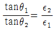
- E1cosθ1=E2cosθ2, D1sinθ1=D2sinθ2,

- E1sinθ1=E2sinθ2, D1cosθ1=D2cosθ2,
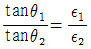
- E1cosθ1=E2cosθ2, D1cosθ1=D2cosθ2,

(정답률: 53%)
4. 자기회로의 자기저항에 대한 설명으로 옳은 것은?
- 투자율에 반비례한다.
- 자기회로의 단면적에 비례한다.
- 자기회로의 길이에 반비례한다.
- 단면적에 반비례하고 길이의 제곱에 비례한다.
(정답률: 50%)
5. 높은 주파수의 전자파가 전파될 때 일기가 좋은 날보다 비 오는 날 전자파의 감쇠가 심한 원인은?
- 도전율 관계임
- 유전율 관계임
- 투자율 관계임
- 분극률 관계임
(정답률: 50%)
6. 스토크스(Stokes)의 정리를 표시하는 일반식은?
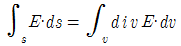
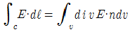
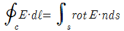
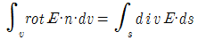
(정답률: 52%)
7. 평행판 콘덴서의 극판 사이에 유전율이 각각 ε1, ε2인 두 유전체를 반씩 채우고 극판 사이에 일정한 전압을 걸어줄 때 매질 (1), (2) 내의 전계의 세기 E1, E2 사이에 성립하는 관계로 옳은 것은?
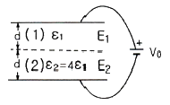
- E2 = E1
- E2 = 2E1
- E2 = 4E1
- E2 = E1 / 4
(정답률: 48%)
8. 코일 A 및 코일 B가 있다. 코일 A의 전류가 1/30초간에 10A 변화할 때 코일 B에 10V의 기전력을 유도한다고 한다. 이 때의 상호인덕턴스는 몇 H 인가?
- 1/0.3
- 1/3
- 1/30
- 1/300
(정답률: 50%)
9. 전계 E(V/m)가 두 유전체의 경계면에 평행으로 작용하는 경우 경계면의 단위면적당 작용하는 힘은 몇 N/m2 인가? (단, ε1, ε2는 두 유전체의 유전율이다.)
- f = E2(ε1-ε2)
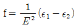
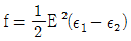
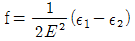
(정답률: 52%)
10. 자기 벡터포텐셜
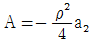
(Wb/m) 일 때,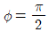
, 1 ＜ ρ ＜ 2m, 0 ＜ Z ＜ 5m 표면을 통과하는 전 자속은 몇 Wb 인가?- 2.75
- 3.25
- 3.75
- 4.25
(정답률: 40%)
11. 반지름 a(m), 권수 N, 길이 ℓ(m)인 무한히 긴 공심 솔레노이드의 인덕턴스는 몇 H 인가?
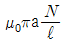
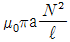
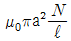
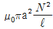
(정답률: 45%)
12. 자유공간 중에서 점 P(2, -4, 5)가 도체면상에 있으며, 이 점에서 전계 E=3ax-6ay+2az[V/m]이다. 도체면에 법선성분 En 및 접선성분 Ei의 크기는 몇 [V/m] 인가?
- En = 2, Ei = 3
- En = 7, Ei = 0
- En = -6, Ei = 0
- En = 3, Ei = -6
(정답률: 38%)
13. 도체 내에서 변위전류의 영향을 무시할 수 있는 조건은? (단, K : 도전도(導電度) 또는 도전율, ε : 유전율, f : 교번 전자계의 주파수이다.)
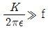
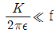
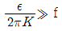
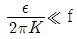
(정답률: 40%)
14. 공기 중의 원점의 점전하에서 0.5m, 2m 거리의 전위가 각각 30V, 15V일 때 1m 거리인 점의 전위는 몇 V 인가?
- 15
- 17.5
- 20
- 22.5
(정답률: 28%)
15. 전기력선의 성질에 대한 설명 중 옳은 것은?
- 전기력선은 등전위면과 평행하다.
- 전기력선은 도체 표면과 직교한다.
- 전기력선은 도체 내부에 존재할 수 있다.
- 전기력선은 전위가 낮은 점에서 높은 점으로 향한다.
(정답률: 45%)
16. 같은 방향의 전류가 흐르는 두 무한 직선 전류가 일정한 거리 떨어져 있을 때 한 무한 직선 전류에 의해 작용되는 다른 무한직선 전류의 전자력은?
- 두 무한 직선전류의 방향으로 작용한다.
- 두 무한 직선전류와 수직방향이며 흡인력이다.
- 두 무한 직선전류간의 거리에 반비례하며 반발력이다.
- 두 무한 직선전류의 곱에 비례하고 거리의 제곱에 반비례한다.
(정답률: 46%)
17. 전장이 E=ix2+jy2로 주어질 때 전력선의 궤적 방정식을 나타내는 식은? (단, C는 상수이다.)
- y = Cx
- y = Clnx
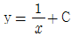
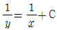
(정답률: 27%)
18. 반지름 a(m)의 원주도체(투자율 μ) 내부에 균일하게 전류 I(A)가 흐를 때 도체의 단위길이에 저장되는 내부 에너지는 몇 J/m 인가?
- μI2 / 8π
- μaI2 / 8π
- μI2 / 16π
- μaI2 / 16π
(정답률: 29%)
19. 대지면에 높이 h로 평행하게 가설된 매우 긴 선전하가 지면으로부터 받는 힘은?
- h에 비례한다.
- h2에 비례한다.
- h에 반비례한다.
- h2에 반비례한다.
(정답률: 48%)
20. 히스테리시스 곡선의 기울기는 다음의 어떤 값에 해당하는가?
- 투자율
- 유전율
- 자화율
- 감자율
(정답률: 40%)
2과목: 회로이론
21. 그림의 T형 4단자 회로에 대한 전송 파라미터 D는?
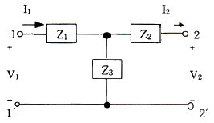
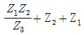
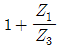
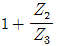
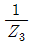
(정답률: 45%)
22. 교류 브리지가 평형 상태에 있을 때 L의 값은?
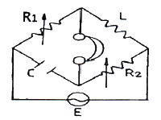
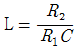
- L = CR1R2
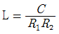
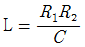
(정답률: 37%)
23. 그림의 회로에서 일정 전압(E)에 대해서 L을 변화시킬 때 선로 전류 (I)는
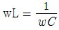
일 경우 어떻게 되는가?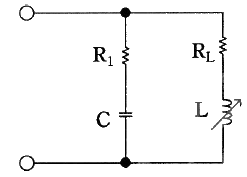
- 최대가 된다.
- 최소가 된다.
- 지수 함수 형태가 된다.
- 변하지 않는다.
(정답률: 34%)
24. 지수함수 e-at의 라플라스 변환은?
- 1 / (S+a)
- 1 / (S-a)
- S + a
- S - a
(정답률: 47%)
25. 테브난의 정리와 쌍대의 관계가 있는 것은?
- 밀만의 정리
- 중첩의 정리
- 노튼의 정리
- 상사 정리
(정답률: 61%)
26. 그림과 같은 T형 회로에서 단자 1-1' 측에서 바라본 개방 임피던스(Z1O) 및 단락 임피던스(Z1S)를 구하면 각각 몇 Ω 인가?
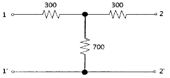
- Z1O=1000, Z1S=51
- Z1O=100, Z1S=500
- Z1O=1000, Z1S=36
- Z1O=1000, Z1S=510
(정답률: 54%)
27. RL 및 RC 회로의 과도 상태에 관한 설명 중 틀린 것은?
- t=0 일 때 C는 단락 상태가 된다.
- 시정수가 크면 정상 상태에 빨리 도달한다.
- t=0 일 때 L은 개방 상태가 된다.
- 변화하지 않는 저항만의 회로에서는 과도현상이 없다.
(정답률: 44%)
28. 선형 회로망에서 단자 a, b 간에 200V의 전압을 가할 때 c, d에 흐르는 전류가 10A이었다. 반대로 같은 회로에서 c, d간에 100V를 가하면 a, b에 흐르는 전류는 몇 A 인가?
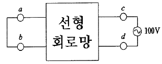
- 2.5
- 15
- 10
- 5
(정답률: 49%)
29. 그림과 같은 회로의 입력 전압의 위상은 출력 전압의 위상에 비해 어떻게 되는가?
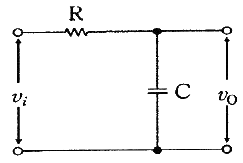
- 앞선다.
- 뒤진다.
- 같다.
- 앞설 수도 있고 뒤질 수도 있다.
(정답률: 41%)
30. 하이브리드 h파라미터 중 V1=h11I1+h12V2, I2=h21I1+h22V2가 주어졌을 때 단락 순방향 전류 이득은?
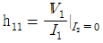
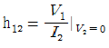
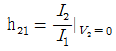
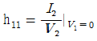
(정답률: 49%)
31. 다음과 같은 회로망에서 단자 1, 2에서 바라본 테브난 등가저항의 크기는?
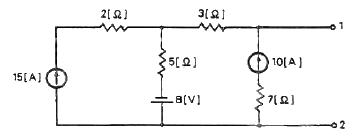
- 3Ω
- 5Ω
- 8Ω
- 12Ω
(정답률: 44%)
32. 정현파 전압이 인가된 회로의 일부에 Z1, Z2가 직렬로 연결되어 있을 때 교류 전압계로서 Z1, Z2 각각의 양단 전압을 측정하였더니 둘 다 100V 이고, Z1, Z2 전체의 양단 전압이 0V 이면 다음 설명 중 옳은 것은?
- Z1, Z2 모두 R이다.
- Z1, Z2중 하나는 C, 또 하나는 R일 것이다.
- Z1, Z2 중 하나는 L, 또 하나는 R일 것이다.
- Z1, Z2 중 하나는 C, 또 하나는 L일 것이다.
(정답률: 59%)
33.
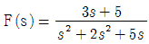
의 최종치 정리의 결과값은?- 4
- 2
- 1
- 0
(정답률: 44%)
34. 상수 A를 푸리에 변환(Fourier Transform)하면?
- 0
- 1
- 2πAδ(w)
- Aδ(w)
(정답률: 31%)
35. 기본파의 30%인 제2고조파와 20%인 제3고조파를 포함하는 전압의 왜형률은?
- 0.24
- 0.28
- 0.32
- 0.36
(정답률: 46%)
36. 저항 3Ω, 유도 리액턴스 4Ω의 직렬회로에 60Hz의 정현파 전압 180V를 가했을 때 흐르는 전류의 실효치는?
- 26A
- 36A
- 45A
- 60A
(정답률: 46%)
37. 정현파 전압의 진폭이 Vm이라면 이를 반파 정류 했을 때의 평균값은?
- Vm / π
- Vm / √2
- Vm / 2
- 2Vm / π
(정답률: 52%)
38. RLC 직렬 회로에서 페이저도(phasor diagram)는?
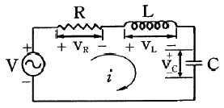
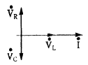
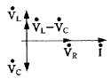
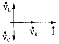
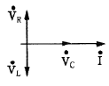
(정답률: 50%)
39. 회로에서 결합계수가 K일 때 상호인덕턴스 M은?
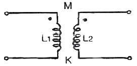
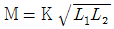
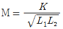
- M = KL1L2
(정답률: 51%)
40. 그림과 같은 페이저(phasor)도가 있을 때 등가 임피던스를 구하면?
- 38.3 + j30.4
- 28.3 + j28.3
- 20.5 + j20.5
- 61.3 + j57.8
(정답률: 46%)
3과목: 전자회로
41. 전압 증폭기에서 A가 기본 증폭회로의 이득이고, β가 귀환회로의 이득일 때, 전압이득이 증가되는 조건은?
- | 1-βA | = 0
- | 1-βA | ＜ 0
- | 1-βA | ＞ 0
- | 1-βA | ＜ 1
(정답률: 41%)
42. 변압기의 1차 전압(Vin)이 100Vrms이고, 입력과 출력의 권선비가 10:1일 때, 브리지 정류기에 사용되는 정류다이오드의 최대 역 전압(PIV)은 몇 V 인가?(오류 신고가 접수된 문제입니다. 반드시 정답과 해설을 확인하시기 바랍니다.)
- 9.3
- 8.4
- 13.44
- 12.74
(정답률: 27%)
43. 다음과 같이 미분 연산증폭기에 삼각파 입력이 공급될 때, 출력전압의 범위는?
- -3.3V ~ +3.3V
- -4.4V ~ +4.4V
- -5.5V ~ +5.5V
- -6.6V ~ +6.6V
(정답률: 49%)
44. 다음 중 발진회로에 대한 설명으로 적절하지 않은 것은?
- 발진회로는 정귀환 회로로 이루어져 있다.
- 발진조건은 귀환율 β=1 이다.
- 위상 변위(phase-shift) 발진기의 귀환 회로는 출력신호의 위상이 180도 변위가 일어나도록 구성되어 있다.
- 발진이 잘 일어나게 하기 위해서는 개방 루프 이득(open loop gain)을 이론치보다 약간 높게 설정한다.
(정답률: 34%)
45. 발진주파수를 안정시키는 방법으로 적합하지 않은 것은?
- 항온조 시설을 한다.
- 정전압 회로를 설치한다.
- 주파수 체배기를 사용한다.
- 온도 보상용 부품을 사용한다.
(정답률: 53%)
46. 그림의 회로에서 R1, R2, R3, Rf가 각각 2kΩ, 3kΩ, 1kΩ, 9kΩ 일 때, 중첩의 원리를 사용하여 출력전압(VO)을 구하면?
- VO = 3v1+2v2
- VO = 2v1+3v2
- VO = 6v1+4v2
- VO = 4v1+6v2
(정답률: 34%)
47. 저주파 증폭기의 직류 입력은 2kV, 400mA 이고, 효율은 80%일 때 부하에서 나타나는 전력은?
- 640W
- 600W
- 480W
- 320W
(정답률: 58%)
48. 트랜지스터의 직류증폭기에 있어서 드리프트를 초래하는 주된 원인으로 적합하지 않은 것은?
- hre의 온도변화
- hfe의 온도변화
- VBE의 온도변화
- ICO의 온도변화
(정답률: 40%)
49. RC 결합 소신호 증폭기에서, 고역 주파수 응답을 구하는 식으로 옳은 것은? (단, 중역이득은 Am이고, 고역차단 주파수는 fh이다.)
(정답률: 45%)
50. 단위 이득 주파수(fT)가 260MHz인 트랜지스터가 중간 영역에서 전압이득이 50인 증폭기로 사용될 때 이상적으로 이룰 수 있는 대역폭은?
- 2.7MHz
- 3.5MHz
- 5.2MHz
- 25.4MHz
(정답률: 44%)
51. 베이스 접지 증폭기 회로에서 전류 증폭율(αo)과 차단 주파수(fo)가 각각 0.97, 1MHz인 트랜지스터가 2MHz로 동작할 때 전류 증폭율(α)은?
- 0.642
- 0.434
- 0.542
- 0.145
(정답률: 36%)
52. 다이오드와 커패시터를 사용하여 입력전압의 2배, 3배, 4배로 증가시키는 회로는?
- 클리퍼 회로
- 클램퍼 회로
- 체배기 회로
- 적분기 회로
(정답률: 35%)
53. 다음 회로에 vi=100sinwt의 입력이 가해질 경우 출력파형의 형태와 최대치 전압으로 가장 적합한 것은? (단, D1, D2는 이상적인 다이오드이다.)
- 정현파, 약 10V
- 구형파, 약 10V
- 정현파, 약 40V
- 구형파, 약 40V
(정답률: 44%)
54. 다음 중 플립플롭과 같은 기능을 가지는 회로는?
- 무안정 멀티바이브레이터
- 슈미트 트리거
- 쌍안정 멀티바이브레이터
- 단안정 멀티바이브레이터
(정답률: 45%)
55. 빈 브리지 발진기에서 R=3.3kΩ, C=5nF일 때 발진 주파수는 몇 kHz 인가?
- 9.65
- 8.54
- 6.53
- 10.56
(정답률: 26%)
56. 베이스 변조와 비교한 컬렉터 변조의 특징으로 적합하지 않은 것은?
- 조정이 어렵다.
- 변조효율이 좋다.
- 대전력 송신기에 적합하다.
- 높은 변조도에서 일그러짐이 적다.
(정답률: 47%)
57. 다음 회로는 한 쌍의 이미터 폴로어가 직렬로 연결된 달링턴 증폭기이다. 전압이득은 1에 근사한 값인데 달링턴 증폭기가 많이 사용되는 이유는?
- 입력 임피던스가 높고 출력 임피던스도 높기 때문
- 입력 임피던스는 높고 출력 임피던스는 낮기 때문
- 입력 임피던스는 낮고 출력 임피던스는 높기 때문
- 입력 임피던스가 낮고 출력 임피던스도 낮기 때문
(정답률: 45%)
58. 다음과 같은 클램프(Clamp)회로의 출력 파형으로 가장 적합한 것은? (단, 다이오드는 이상적이고, RC의 시정수는 대단히 크다.)
(정답률: 35%)
59. 비안정 멀티바이브레이터 회로에서 출력 전압의 파형은?
- 구형파
- 정현파
- 삼각파
- 스텝파
(정답률: 48%)
60. 전원 정류 회로의 리플 함유율을 작아지게 하는 방법으로서 가장 적당한 것은?
- 출력 측 평활용 커패시터의 정전 용량을 크게 한다.
- 출력 측 평활용 커패시터의 정전 용량을 작게 한다.
- 입력 측 평활용 커패시터의 정전 용량을 크게 한다.
- 입력 측 평활용 커패시터의 정전 용량을 작게 한다.
(정답률: 45%)
4과목: 물리전자공학
61. Ge과 비교하였을 때, Si의 장점이 아닌 것은?
- 이동도(mobility)가 크다.
- 안정된 SiO2을 만들 수 있다.
- 금지대(forbidden gap)가 크기 때문에 온도 특성이 우수하다.
- 선택된 작은 부분에서 불순물의 농도를 조절할 수 있다.
(정답률: 35%)
62. 열전자 방출현상에서 전류와 일함수와의 관계를 나타낸 식은?
- Einstein의 관계식
- Langmuir-Child의 관계식
- Richardson-Dushmann의 관계식
- Schottky의 관계식
(정답률: 23%)
63. 광전자 방출에 관한 특징과 거리가 먼 것은?
- 방출전자의 개수는 빛의 세기에 비례한다.
- 방출전자의 초속도는 빛의 세기에 의하여 변화된다.
- 빛을 조사한 즉시 전자가 방출한다.
- 방출전자의 개수 및 속도는 광범한 온도 범위에서 온도와 관계없이 일정하다.
(정답률: 23%)
64. 전자의 수가 33인 원자의 가전자 수는?
- 2개
- 3개
- 4개
- 5개
(정답률: 40%)
65. 어떤 물질에 일정한 진동수의 X선을 비추면 그 물질에 의해 산란된 X선 중에서 입사 X선보다 파장이 긴 X선 성분이 포함되는 현상을 무엇이라고 하는가?
- 광전효과
- 초전효과
- 콤프턴효과
- 기전효과
(정답률: 56%)
66. pn 접합이 충분히 역바이어스 되어있는 경우 접합용량(junction capacitance)과 역바이어스 전압(V)과의 관계로 옳은 것은?
(정답률: 30%)
67. 광전자 방출 현상에서 방출된 전자의 운동에너지(Ek)는 다음과 같이 표시된다. 여기서 Ew는 무엇을 의미 하는가? (단, ν는 광자의 주파수, h는 프랭크(plank) 상수이다.)
- 광전물질의 일함수
- 광자의 충돌 에너지
- 광전물질의 열에너지
- 광전물질 내부의 전자 에너지
(정답률: 47%)
68. 반도체의 자유전자는 전도대에 있고, 결합전자는 가전자대에 있을 경우 틀리게 설명한 것은?
- 정공은 가전자대에만 있다.
- 정공은 주로 전도대에 있다.
- 가전자대는 거의 충만 되어 있다.
- 전도대로 전이된 전자는 가전자대에 정공을 만든다.
(정답률: 33%)
69. 27[℃]인 금속 도체에서 페르미 준위보다 0.1eV 상위 및 하위에서 전자가 점유하는 확률은? (단, 볼츠만의 상수(k)는 1.38×10-23 [J/K]이다.)
- 상위 : 0.01, 하위 : 0.99
- 상위 : 0.02, 하위 : 0.98
- 상위 : 0.09, 하위 : 0.91
- 상위 : 0.10, 하위 : 0.90
(정답률: 39%)
70. 양자역학의 보어(Bohr) 원자 모형에서 전자의 운동 방경으로 옳은 것은? (단, 주양자수는 n이다.)
- n에 비례한다.
- n2에 비례한다.
- 1/n 에 비례한다.
- 1/n2 에 비례한다.
(정답률: 41%)
71. 서미스터(Thermistor) 소자에 관한 설명 중 틀린 것은?
- 반도체로 만들어진다.
- 저항 온도계수가 항상 +(양)의 값이다.
- 온도에 따라 저항의 값이 크게 변화한다.
- 온도 자동제어의 검출부나 회로의 온도 특성보상 등에 사용된다.
(정답률: 47%)
72. 반도체에 관한 효과에 따른 용도가 틀리게 짝지어진 것은?
- 자기 효과 : 홀소자
- 제베크 효과 : 열전대
- 펠티에 효과 : 전자냉각
- 외부 광전 효과 : 광전도 셀
(정답률: 33%)
73. 열평형상태에 있는 반도체에서 가전자대 정공농도(po)와 전도대 전자농도(no)를 곱한 pn적에 관한 설명으로 옳은 것은?
- 온도 및 불순물 밀도의 함수이다.
- 온도 및 금지대 에너지 폭의 함수이다.
- 불순물 밀도 및 금지대 에너지 폭의 함수이다.
- 불순물 밀도 및 Fermi 준위의 함수이다.
(정답률: 18%)
74. MOSFET에 대한 설명 중 틀린 것은?
- 입력 임피던스가 크다.
- 저잡음 특성을 쉽게 얻을 수 있다.
- 제작이 간편하고, IC화하기에 적합하다.
- 사용주파수 범위가 쌍극성 트랜지스터보다 높다.
(정답률: 34%)
75. 진성 반도체에 있어서 전도대의 전자밀도(n)는 에너지 갭(Eg)의 크기에 따라 변한다. 다음 전자밀도와 에너지 갭의 관계를 바르게 설명한 것은?
- n은 Eg의 증가에 지수 함수적으로 증가한다.
- n은 Eg의 증가에 지수 함수적으로 감소한다.
- n은 Eg에 반비례한다.
- n은 Eg에 비례한다.
(정답률: 34%)
76. 접합 트랜지스터의 직류전류증폭률(hFE)에 관한 설명 중 틀린 것은?
- hFE는 이미터 도핑(doping)에 비례한다.
- hFE는 베이스 폭에 비례한다.
- hFE는 베이스 도핑(doping)에 비례한다.
- hFE는 컬렉터 전류의 변화가 큰 경우 증가한다.
(정답률: 26%)
77. 전계에 의하여 일함수가 작아져 열전자 방출이 쉬워지는 효과는?
- 쇼트키(Schottky) 효과
- 펠티에(Peltier) 효과
- 제벡(Seebeck) 효과
- 홀(Hall) 효과
(정답률: 41%)
78. 진공 속의 알루미늄(Al) 표면에서 전자 1개가 방출하는데 필요한 최소에너지는 얼마인가? (단, 알루미늄의 일함수는 4.08eV이다.)
- 4.08[J]
- 2.55×10-19[J]
- 6.53×10-19[J]
- 2.70×10-33[J]
(정답률: 38%)
79. pn 접합에 관한 설명으로 가장 적합한 것은?
- p형 반도체와 n형 반도체를 접촉하여 만든 것이다.
- 한 개의 단 결정에 억셉터와 도너 불순물을 혼합하여 만든 것이다.
- 단결정 반도체 내에서 도너 불순물이 많은 영역과 억셉터 불순물이 많은 영역이 접합되어 있는 것이다.
- 별개의 단결정체에 억셉터 불순물과 도너 불순물을 도핑하여 만든 것을 접촉한 것이다.
(정답률: 34%)
80. 가전자대의 전자밀도가 1025[m-3 ]인 금속에 전류밀도가 107[A/m2 ]인 전류가 흐르면, 이때의 드리프트 속도는 몇 m/s 인가?
- 0.31
- 6.25
- 31.00
- 62.50
(정답률: 51%)
5과목: 전자계산기일반
81. MSB에 대한 설명으로 옳은 것은?
- 맨 왼쪽 비트(최상위 비트)
- 맨 오른쪽 비트(최하위 비트)
- 2진수의 보수
- 8진수의 보수
(정답률: 45%)
82. 다음 순서도 기호의 기능은?
- 처리
- 시작과 끝
- 반복
- 비교·판단
(정답률: 56%)
83. 캐시메모리의 적중(Hit)률이 0.9, 캐시메모리 접근시간이 50ns, 주기억장치 접근시간이 400ns일 때, 평균 기억장치 접근시간은 얼마인가? (단, 캐시 적중여부 판별에 소요되는 시간은 무시한다.)
- 120ns
- 85ns
- 67.5ns
- 53.5ns
(정답률: 32%)
84. n개의 비트(bit)로 정수를 표시할 때 2의 보수 표현법에 의한 범위를 옳게 나타낸 것은?
- -2n ~ 2n-1
- -2n-1 ~ 2n-1
- -2n-1 ~ (2n-1-1)
- -(2n-1-1) ~ (2n-1-1)
(정답률: 46%)
85. 2진수의 부동소수점(floating point) 표현에 대한 설명으로 틀린 것은?
- 고정소수점(fixed point) 표현 방식보다 수를 표현할 수 있는 범위가 넓다.
- 지수(exponent)를 사용하여 소수점의 범위를 넓게 이동시킬 수 있다.
- 소수점 이하의 수를 나타내는 가수(mantissa)의 비트수가 늘어나면 정밀도가 증가한다.
- IEEE 754 부동소수점 표준 중 64비트 복수 정밀도 형식은 32비트 지수를 가진다.
(정답률: 38%)
86. 1비트의 전가산기는 3개의 입력 A, B, Ci 와 2개의 출력 Sum, Cout로 구성된다. A=0, B=1, Ci=0일 때 출력의 값은?
- Sum=0, Cout=0
- Sum=0, Cout=1
- Sum=1, Cout=0
- Sum=1, Cout=1
(정답률: 56%)
87. 한번 메모리를 액세스(access)하면 그것이 목적 데이터의 번지이기 때문에 2회 이상의 메모리 액세스(access)가 필요한 주소지정방식은?
- 간접 주소지정방식
- 직접 주소지정방식
- 상대 주소지정방식
- 인덱스 주소지정방식
(정답률: 50%)
88. 목적 프로그램을 생성하지 않는 방식은?
- compiler
- assembler
- interpreter
- micro-assembler
(정답률: 40%)
89. push와 pop operation에 의해서만 접근 가능한 storage device는?
- MBR
- queue
- stack
- cache
(정답률: 62%)
90. JK 플립플롭에서 J=1, K=0으로 입력될 때 Q(t+1) 상태는?
- 먼저 내용에 대한 complement로 된다.
- 먼저 내용이 그대로 남는다.
- 1로 변한다.
- 0으로 변한다.
(정답률: 56%)
91. 프로그램 카운터가 명령의 주소 부분과 더해져서 유효 주소가 결정되는 주소지정 방식은?
- 절대주소지정방식
- 직접주소지정방식
- 상대주소지정방식
- 간접주소지정방식
(정답률: 44%)
92. 다음 주소 지정 방식 중 데이터 처리가 가장 신속한 것은?
- 자료가 기억된 장소에 직접 혹은 간접으로 사상시킬 수 있는 주소가 기억된 장소에 사상시키는 주소
- 주소에 상수 또는 레지스터에 기억된 주소의 일부분을 계산 또는 접속시켜서 사상시키는 주소
- 명령어 내에 가지고 있는 데이터를 계산한 자료자신에 대하여 사상시키는 주소
- 자료가 기억된 장소에 직접 사상시킬 수 있는 주소
(정답률: 28%)
93. 다음과 같은 명령이 순서적으로 주어졌을 때 결과 값은?
- 6
- 5
- 4
- 2
(정답률: 34%)
94. 다음 중 명령어의 주소 지정방식이 아닌 것은?
- 즉치(immediate) 주소지정
- 오퍼랜드 주소지정
- 레지스터 주소지정
- 인덱스 주소지정
(정답률: 30%)
95. 기본적인 마이크로프로세서(microprocessor)의 내부 구성요소가 아닌 것은?
- 연산부(ALU)
- 제어부(control unit)
- 주소 버스(address bus)
- 레지스터부(registers)
(정답률: 54%)
96. LCD 방식을 이용하나 박막 트랜지스터를 사용하여 전압을 일정하게 유지해서 안정되고 정교한 화소(pixel)를 구현함으로서 화면이 깨끗하고, 측면에서도 비교적 잘 보이는 장점 때문에 노트북 모니터로 많이 사용되는 것은?
- 플라즈마(Plasma)
- CRT(Cathode Ray Tube)
- TFT(Thin Film Transistor)
- HGC(Hercules Graphic Card)
(정답률: 54%)
97. T형 플립플롭을 사용하여 5단 계수기를 만들면 몇 개의 펄스까지 계수할 수 있는가?
- 5개
- 16개
- 32개
- 64개
(정답률: 62%)
98. 범용 또는 특수 목적의 소프트웨어를 조합하거나 조직적으로 구성하고, 여러 가지 종류의 원시 프로그램, 목적 프로그램들을 분류하여 정비한 것은?
- Problem State
- PSW(Program Status Word)
- Interrupt
- Program library
(정답률: 46%)
99. 어셈블리 언어(Assembly language) 명령의 구성 요소와 가장 관계없는 것은?
- label
- mnemonic
- operand
- procedure
(정답률: 24%)
100. 4비트 데이터를 1의 보수로 표현할 수 있는 수의 범위는?
- -7 ~ +7
- -8 ~ +7
- -7 ~ +8
- -8 ~ +8
(정답률: 24%)